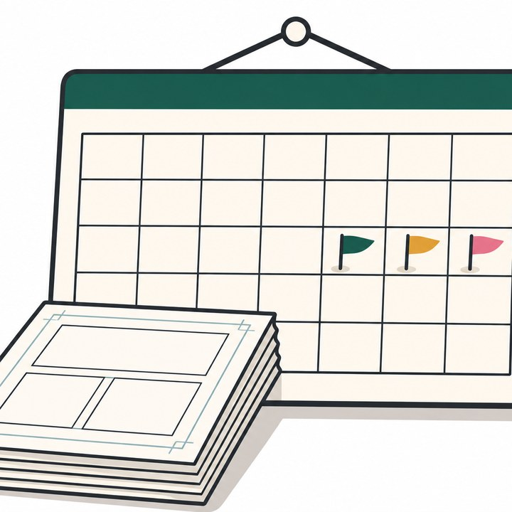

iPhone・iPad・Android の原稿の計画
今日描くページと、
間に合うかがわかる。
同人誌・漫画・イラスト集の原稿を、印刷所の締切から逆算して「今日描く分」を出すアプリです。原稿はページ×工程（ネーム・下描き・ペン入れ・仕上げ……）のマスで持ち、描き終えたらマスを押して塗ります。
App Store・Google Play で配信予定買い切りで全部の機能が使えます。月額・アプリ内課金・広告・アカウントはありません。

こんな困りごとのために
早割に間に合うかわからない
締切はいくつも入れられます（早割・通常・割増）。どれに間に合うかを、時間の余り・足りない分で並べます。
今日どこまで描けばいいか
工程の順・ページの順に、今日の時間で描ける分を出します。塗った分は今日の時間から引くので、塗るたびに増え続けません。
遅れたとき、どうすればいい？
「1日あと 56分」「最後の 4ページを削る」「通常の締切なら間に合う」を数で出します。1日24時間を超える案は出しません。
計算が合わない
平日と休日の時間・描かない日を1日ずつ足して数えます。計算は別に作った例で答え合わせしています。
進みをひと目で見たい
行がページ、列が工程のマスの表で、塗ったマスがひと目でわかります。
相方に進みを伝えたい
進み具合を文にして共有できます（何ページ塗ったか・見込みの日・どの締切に間に合うか）。
できること
| 作品 | 題・ページ数（1〜500）・工程（12まで。名前と1ページの時間）・締切（6まで）・平日と休日の時間・描かない日。見本の値（漫画 24ページ・4工程）から始められる |
|---|---|
| 今日の分 | 今日の時間で描けるページ。押して塗る・戻す。今日塗ったマス |
| 見込み | 描き終わる見込みの日・締切ごとの余りと足りない分・目標の締切 |
| 立て直し案 | 1日あと何分・何ページ削る・間に合う後の締切 |
| 作品の一覧 | いくつも持てて切りかえる。ゴミ箱（30日） |
作品はどこにある？
作品は端末の中だけに置き、開発者には届きません。通信・通知・カレンダーの許可は使いません。